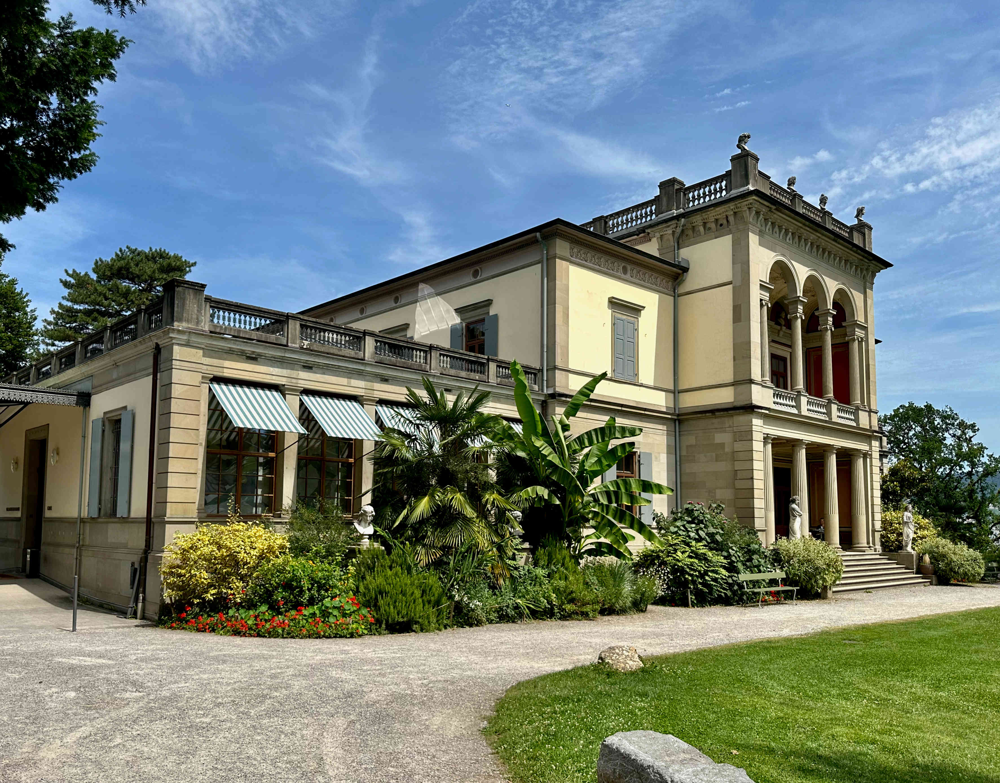
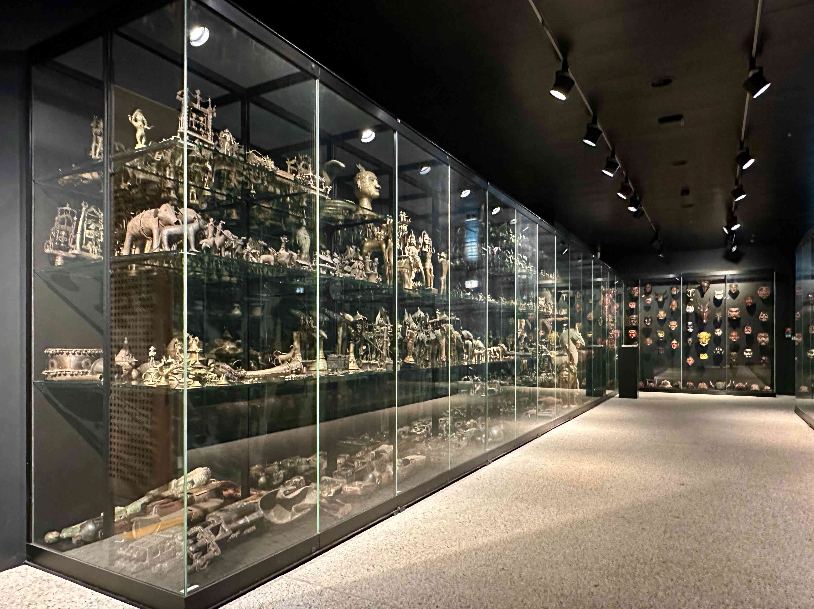
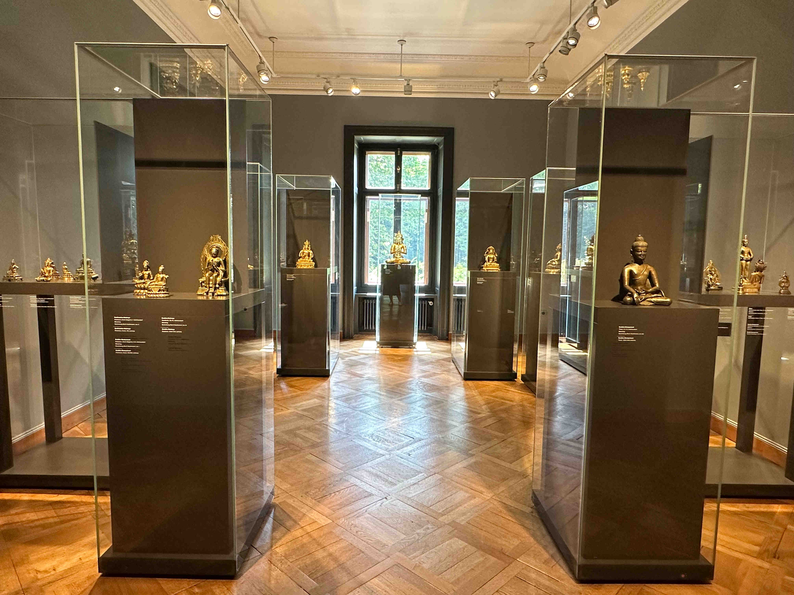

David Plüss zum 60. Geburtstag
Mitten im behaglichen Quartier Enge in der Stadt Zürich, in unmittelbarer Nähe zu einer jüdischen Schule, zur katholischen Kirche Dreikönigen und zur reformierten Kirche Enge, befindet sich das Museum Rietberg. Zum Museum gehören neben der Villa Wesendonck – in der Richard Wagner (1813–1883), den die Familie Wesendonck verehrte, 16 Monate lang lebte und wo er Tristan und Isolde komponierte – auch die Villa Rieter und die Villa Schönberg. Die Villa Wesendonck inmitten des an alten Bäumen reichen Rietbergparks ist seit 1945 im Besitz der Stadt Zürich. 2007 wurde das Gebäudeensemble aus drei repräsentativen Villen aus dem 19. Jahrhundert um einen Erweiterungsbau, den ‹Smaragd›, ergänzt, dessen moderne Glasfassade einen neuen ästhetischen Akzent setzt und der nicht minder ansehnlich ist. Die sorgsam restaurierten Villen und die grosszügige Parkanlage dokumentieren einen saturierten Wohlstand, in dem sich die Besucher:innen des Museumscafés und des Parks fast das ganze Jahr über sonnen.
Villa Wesendonck, von 1853–1857 für Otto und Mathilde Wesendonck erbaut. (Foto: Adriana Basso Schaub)
Schaudepot. (Foto: Adriana Basso Schaub)
Ausstellungsräume in der Villa Wesendonk. (Foto: Adriana Basso Schaub)
Shiva Nataraja, ein Kultbild der Chola um 1050, Südindien. (Foto: Adriana Basso Schaub)
autor
Weitere Artikel von {{ author.author }} finden Sie hier:
Zur Vertiefung:
- textb4link (Leerzeichen am Schluss) text